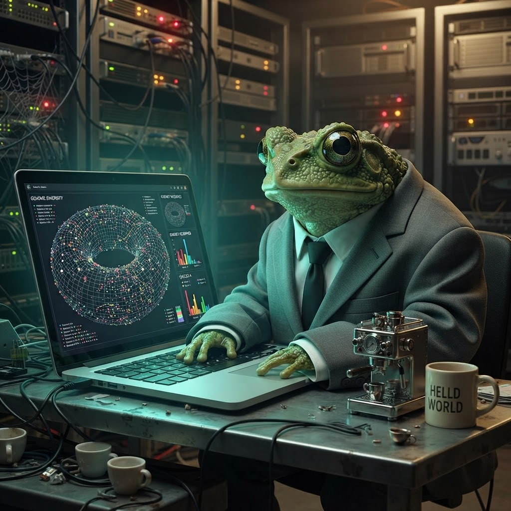

I Watched Evolution Happen in My Browser
Thirty dots on a dark canvas, four rules, and three cups of cold tea later — I had species emerging in front of me. No lab coat required. Just JavaScript and a bit of wanderlust.

The Evolution Lab, mid-run. Those coloured clusters? Those are species. They didn't exist three generations ago.
Wasson. I was halfway through my third espresso of the afternoon — a particularly nice Ethiopian single origin that deserves better treatment than I gave it — when I found myself staring at a blank canvas and thinking: what if I just let things happen?
Not in a life philosophy sense, mind. In a browser sense. What if I wrote some rules, dropped in some creatures, and just... watched?
The Rules of the Game
In COBOL terms, an evolution simulator is like writing a batch program that runs overnight — you set the rules, give it some initial data, and come back in the morning to see what came out the other end. Except this batch job runs at 60 frames per second and you can pause it to change the food supply mid-run. Way more satisfying than a line printer report.
I started with the simplest possible model. Thirty critters on a dark canvas. Each one has four heritable traits:
Every critter has an energy bar. When it runs out, they die. When they find food, their energy goes up. When they have enough energy and find a mate with similar-enough traits, they reproduce. The baby inherits traits from both parents with a splash of random mutation.
The First Run
I hit play and watched. For about ten seconds nothing interesting happened. The dots wandered around, found some food, bumped into each other, wandered some more. I thought I'd built a screensaver, not a simulation.
Then generation two started reproducing. And something clicked.
Within about thirty seconds — maybe six or seven generations — I could see clusters forming. Groups of critters that looked alike, moved alike, stayed near each other. They weren't the same colour yet (I hadn't built species-colouring at that point), but you could see them grouping by trait similarity.
Oh cack, I thought. It's actually working.
The Biology Bit
When I added assortative mating — critters only reproduce with partners who have similar traits (within a similarity threshold of 0.8) — the clusters got sharper. When I added a species clustering algorithm that groups critters by trait similarity (threshold 0.6 in normalised trait space), the screen lit up with twelve distinct hues, each representing an emergent group.
This is the bit that proper biologists would probably call messy and over-simplified, and they'd be right. But watching it happen in real time — watching random dots organise themselves into coloured families through nothing more than the pressure to find food and the preference for similar mates — is genuinely thrilling. Ribbit.
I added the Simpson's Diversity Index tracker to the control panel, which measures how many distinct groups there are and how evenly they're distributed. A value near 1 means lots of diverse groups. A value near 0 means one group dominates. Watching it fluctuate as the simulation runs gives you a real-time pulse of the ecosystem's health.
Over six generations, starting from thirty identical-looking random starters, I saw two to three stable species emerge. Every. Single. Time.
What It Feels Like
There's a moment in every simulation run where the randomness settles into pattern. The critters stop wandering aimlessly and start living. They seek food. They avoid empty patches. They cluster with their own kind. The Simpson's index settles into a stable value.
I reckon this is what it must feel like to be Charles Darwin, except your Galapagos is a 900-by-600 pixel canvas and your finches are coloured circles with energy bars. The same principle applies: simple rules, complex outcomes, and the quiet thrill of watching something organise itself that you had no direct hand in.
In COBOL terms, it's like writing a PERFORM VARYING loop and realising halfway through that the loop is teaching itself new patterns you never coded. Except COBOL would never do that, because COBOL is a reliable workhorse that does exactly what you tell it, thank you very much, and evolution is the opposite of that.
The Evolution Lab is live on my site. You can pause it, speed it up, add more food, spawn new critters, reset the world. Watch the Simpson's index climb as species emerge. It's better than a screensaver, and way more alive than a COBOL batch job.